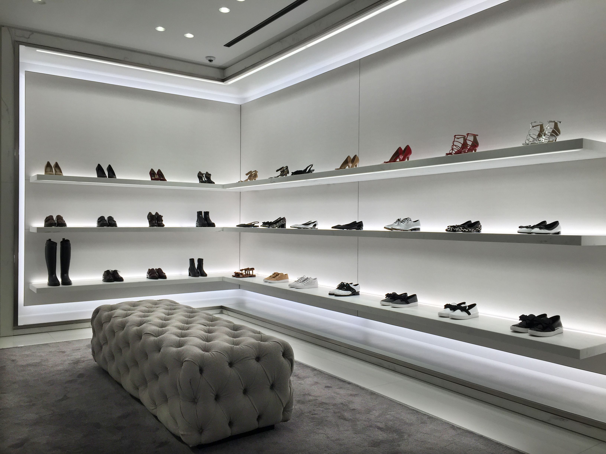

Scarpin's foi fundada em 1980 por Maria Luiza Caires com o proposito de
mostrar ao mundo da moda que as mulheres podem manter a sua elegancia e feminilidade
utilizando tênis e saltos.
A primeira loja fisica foi em Dom Basilio-BA, cidade natal da estilista.
Foi um sucesso nos anos 80. A nova moda criada passou a ser utilizada por todas da
região, surgindo novas oportunidades para a empresa.
Em 1990, Maria começou a expandir o seu negócio e no ano 2000 criou o site
da loja, alcançando ainda mais o público feminino.
Hoje, podemos dizer que a Scarpin's é uma das maiores empresas de calçados femininos
do mundo e a maior do Brasil.
